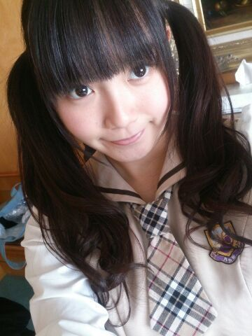

| 2014/02 26 Wed | ひめたん(*>ω<*)そ の412 |

にたにたにたにた、ひめたん
あっそうそう
横アリ一回も転ばなかったよ( ´ ▽ ` )！
とゆーか今回は
ステージの作り上
転ぶような段差がなかったかな(笑)
組閣......
うーんそうだなあ
ひめたんはどうやら飲み込むのに
時間がかかる子なのであれだけども
うーん何言えばいいかわかんない！
ごめんね？
何も考えてないわけじゃなかいんだ
ただ、ぶきっちょなとこあるからさー
とりあえずひめたんは今まで通り
がんばっていきます(ノ)ω(ヾ)
いや、まだまだ足りないんだよね
もっとがんばります！
今までよりも、もっともっと！
らんらん (寺田蘭世ちゃん)の妹ちゃんとね
お話しちゃったー♪
代々木ライブ以来かな？姉妹そろってかあゆす
写メも撮ったよー( _´ω`)_
またライブおいでーね

そしてまたお話しましょっ
あ、これは余談だけども
ライブの前日ホテルにお泊まりだったのね
それでねーその日は
みりりん (渡辺みり愛ちゃん)と
ツイン部屋だったのー♪
２期生ちゃんとお泊まりしたの
はじめてだったのね
みりりんとでよかったーヽ(〃∀〃)ノ
またお泊まりしよーねっ

近！
今日ね、
文集を先生がコピーして
製本したのよ
そしたらねひめたんね
なんとね
タイトルを忘れてたみたいヽ(；▽；)ノ
最初の一行白紙なんて
やー恥ずかしいどうしようヽ(；▽；)ノ
結構まじめな文集書いたのにー
やめてーみんな読まないでー......

 女の子はきゅんきゅん王国の何ー？
女の子はきゅんきゅん王国の何ー？
お姫さまかなーそれとも王子様かなー
どっちがいーい？
メイドさんでもいいよー(＊^ω^＊)
ってかひめたんメイドさんやりたーいっ
トマトとやまとまとどっちがすきー？
やまとまと(即答)
だから！ひめたんの推しメンやねん！
ひめたん、いつも見ると、
ワンピースやスカートだけど、
パンツとかはくときもあるの？？？
ほっとんど持ってないですねー
空飛ぶ個人PVで
パンツスタイルで来てーって言われて
慌てて買いにゆきました(´・ω・｀)
僕もきゅんきゅん王国の
お姫様になりたいのですが
どうしたらいいですか?(20代 男)
うーん難しい質問だなあ
一緒にがんばろ？
夢は叶えるものって言葉は別に信じてないけど
そーゆーことだよ？
ひめたんとじゅうたんの違いは、
なんとなく理解できました。
ですが、ひめたんとポリウレタンの違いが、
まだわかりません。どうか教えてください。
ちょっと待ってください
お願いだから、どうかお願いだから
ポリウレタンはとりあ端っこに置いといて
ひめたんとじゅうたんの違いを
完璧に理解してくださいませんかね
一生のお願いです...どうか......
ひめたんが これやってる女の子かわいいな
って思う髪型は？？
編み込みくるくる下ろし！
メルヘンな感じするでしょー♪
ひめたん最近やってないなー
ハーフツインしてる子もすきだよー
生まれ変わるなら広島になりたい？
お、おう、そうっですね
それくらいの広島愛は
もちろんありますよ(ノ)ω(ヾ)
比喩法ってあるよね
うん？ちょっと違うか
 USJ行ったことある？
USJ行ったことある？
これ本気の質問ね！マジで！知りたい！
あるよー
広島人は夢の国は行ったことないけど
USJはよく行くってひと
いっぱいいるよー近いからね♪
この前、学校に生卵持って行って見たら
ひよこが生まれてたんだけど、
ひめたんもそういう経験ある？？
うそだー(笑)
でもそれちょっとかあいいー(「・ω・)「
プリンにはカラメルが必要派？
それともいらない派？
なくても良いけど
あったらなお嬉しいかな。
そーいやバケツプリン作ろうと思ったら
カラメルは敷くのかなー？
誰か教えてー
きゅんきゅん王国って永遠に不滅ですか？
おばあちゃんになっても...（笑）？
加齢？なにそれ(・∀・)
ひめたんのブログの
コメント欄下２ケタに46を踏んだ方へ
手書きでコメ返するコーナー
＼ ひめたん46 ／

忘れる前に告知☆
NOGIBINGO!2
次の回にひめたん出ますよーヽ(〃∀〃)ノ
いつもたくさんのコメント
ありがとうございます♪
ライブの感想がたくさんあって
いやー楽しんでいただけたみたいなら
本当によかったよかったったー！
ライブは行けなかったよって方も
お誕生日おめでとうしてくれて
ステキなばーすでーでした。
３年目もよろしくねー＊＊
(＊´・ω・＊)
コメント(459)
2014/02/26 23:36